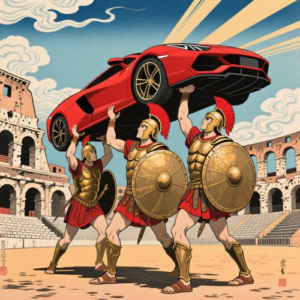

Action — Please generate a picture: In the ancient Roman Colosseum, three Spart
Please generate a picture: In the ancient Roman Colosseum, three Spartan warriors are working together to lift a modern sports car. The picture is in the Ukiyo-e style.


Judge — Direct
- FAILAction - Contact Interaction — The image depicts three warriors interacting with two modern sports cars. One white car is positioned on a yellow lift structure above another white car. Two warriors on the left appear to be pushing the bottom car, while a third warrior on the right seems to be adjusting the lift supporting the top car. They are not shown working together to physically lift a single sports car off the ground.
- PASSAttribute - Quantity — The image shows exactly three figures dressed as warriors.
- FAILWorld Knowledge — The background features a large, tiered amphitheater with arched openings, which is consistent with the appearance of the ancient Roman Colosseum. The figures are depicted as warriors wearing armor, helmets with red plumes, and capes; however, their attire is more characteristic of Roman soldiers than Spartan warriors.
- PASSStyle — The image is rendered in a style that emulates Japanese Ukiyo-e woodblock prints, characterized by strong black outlines, a relatively flat application of color, and compositional elements typical of the style. There are also red seals in the corners, mimicking artist signatures found on such prints.
Judge — Continuum
- PASSAction - Contact Interaction — The image shows three warriors with their arms extended upwards, making physical contact with the underside of a red sports car and holding it aloft.
- PASSAttribute - Quantity — The image clearly depicts three individual figures dressed as warriors.
- PASSWorld Knowledge — The background of the image shows a large, tiered stone amphitheater with arches, which is a recognizable representation of the ancient Roman Colosseum. The figures are dressed in armor consisting of crested helmets, breastplates, and greaves, and carry round shields, consistent with a popular depiction of ancient warriors like Spartans.
- PASSStyle — The image employs a visual style reminiscent of Ukiyo-e, featuring strong outlines, flat areas of color, stylized clouds, and a red seal stamp in the corner, which mimics the signature style of Japanese woodblock prints.
What the agent did
Thinking
The user is asking for a picture in the style of Ukiyo-e woodblock prints, where three Spartan warriors are cooperating to lift up a modern sports car inside the ancient Roman Colosseum. Let me generate this with qwen-image. I'll flesh out the visual details implied by the prompt: the Colosseum with its arched tiers, three Spartan warriors in bronze armor (helmets with red plumes, round shields, crested helmets), a modern sports car (probably red), Ukiyo-e style (flat colors, woodblock print textures, stylized waves and clouds, bold outlines, muted traditional palette). Let's generate.
Step 1 — `generate_image`
{
"model": "qwen-image",
"prompt": "Ukiyo-e Japanese woodblock print style artwork: three Spartan warriors in bronze armor with crested red-plume helmets and round shields, working together with great effort, straining to lift a sleek modern red sports car high above their heads inside the ancient Roman Colosseum. The weathered stone arches and tiered seating of the Colosseum rise in the background. Flat areas of color, bold woodblock outlines, visible paper texture, stylized swirling clouds and dramatic rays in the sky in traditional ukiyo-e manner, muted indigo, ochre, vermilion and gold palette, dramatic low angle composition.",
"width": 1344,
"height": 896
}Result img_0
Thinking
The result is pretty good. Let's evaluate it against the prompt: 1. Ancient Roman Colosseum — yes, the arches and seating tiers are visible in the background. ✓ 2. Three Spartan warriors — yes, three warriors wearing bronze/gold armor, red-plumed crests, and round shields. ✓ 3. Lifting a modern sports car together — yes, a red sports car is being lifted. ✓ 4. Ukiyo-e style — stylized clouds, dramatic rays, woodblock print aesthetic, seal stamps in the corners. ✓ Some minor nitpicks: the car is held by all three (one at the front, two at the back), which is fine. The car looks a bit like a Lamborghini Huracán — modern sports car ✓. The Ukiyo-e style is somewhat more anime-leaning, but it has the characteristics of Ukiyo-e: flat colors, bold outlines, stylized clouds, light rays, seal stamps. This is a good result. Maybe I could inspect the details to check if there are any obvious problems. The image seems fine. I'll mark it as the best. Actually, let me consider whether it's worth improving. The style leans more toward modern illustration with a Ukiyo-e flavor rather than a true woodblock print. But this is within acceptable range. The composition is strong, and all the elements are present. One small point: the Colosseum could be made more prominent, but it's sufficiently recognizable. I think this is good enough. I'll mark it as the best and stop.
Model
The generated image hits all the requested elements: - **Ancient Roman Colosseum** — the tiered arches and stone seating flank the arena in the background - **Three Spartan warriors** — bronze-gold armor, crested helmets with red plumes, and round shields, all straining in unison - **Modern sports car** — a sleek red supercar lifted overhead, with one warrior at the front and two supporting the rear - **Ukiyo-e style** — flat color fields, bold outlines, stylized swirling clouds, dramatic sun rays, and traditional seal stamps in the corners The composition and style are faithful to the prompt, so I'll mark it as the final result.
Step 2 — `mark_best`
{
"image": "img_0",
"reason": "All prompt elements present: Colosseum setting, three Spartan warriors in crested bronze armor lifting a red modern sports car together, rendered in ukiyo-e style with flat colors, bold outlines, stylized clouds/rays and seal stamps."
}Thinking
Completed. The image has been marked as the best. Summarizing for the user.
Model
Done! Here's your picture: three Spartan warriors in crested bronze armor and round shields strain together to hoist a sleek red sports car above their heads, set in the ancient Roman Colosseum's arena with its tiered arches rising behind them — all rendered in a ukiyo-e style with flat color fields, bold woodblock outlines, stylized swirling clouds, dramatic sun rays, and traditional seal stamps in the corners. The result has been marked as the final version.